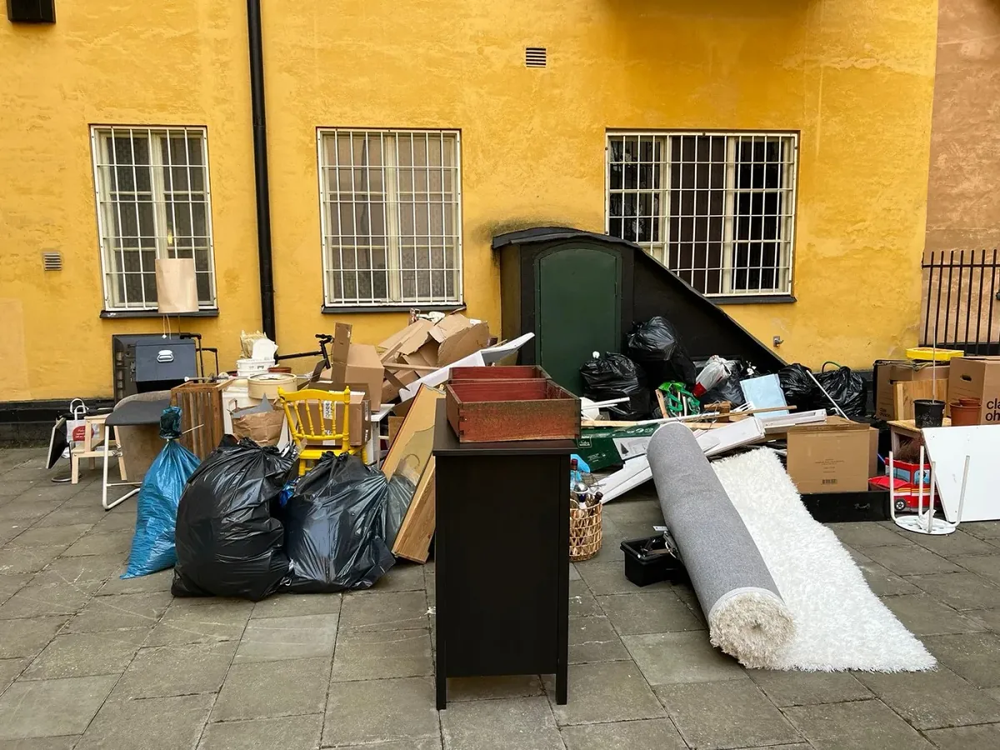
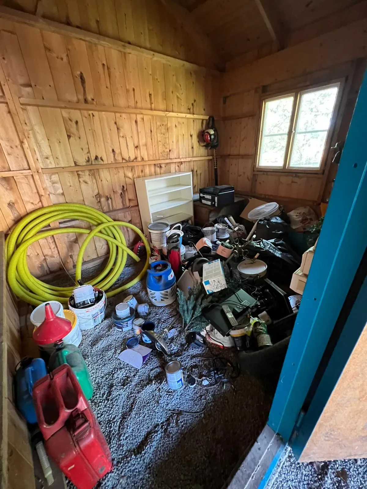
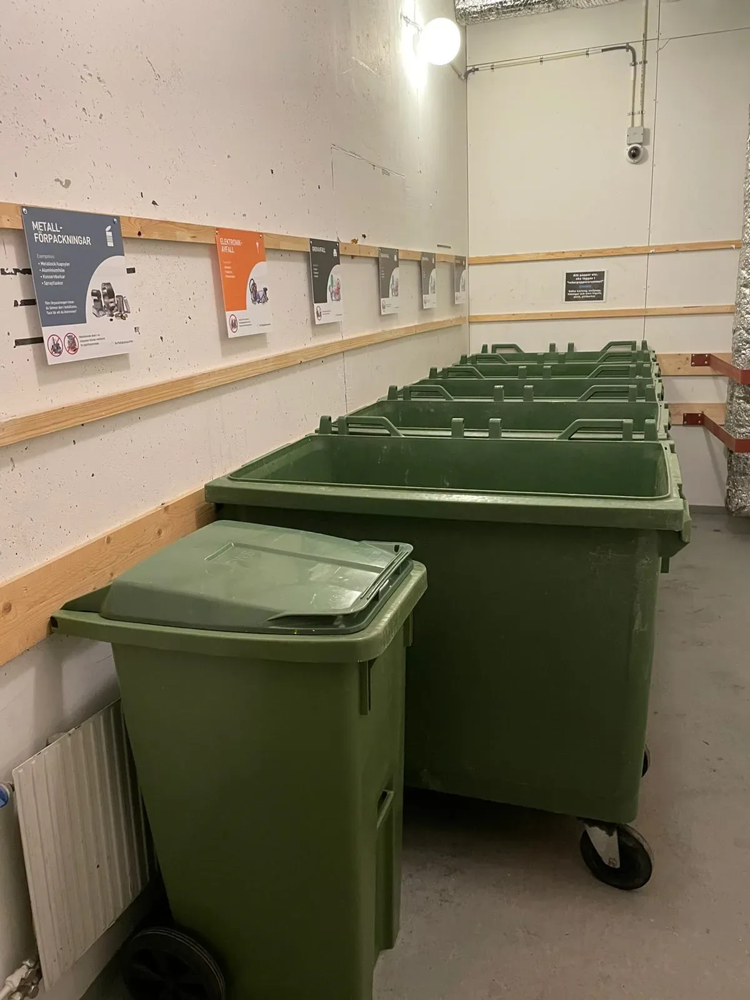
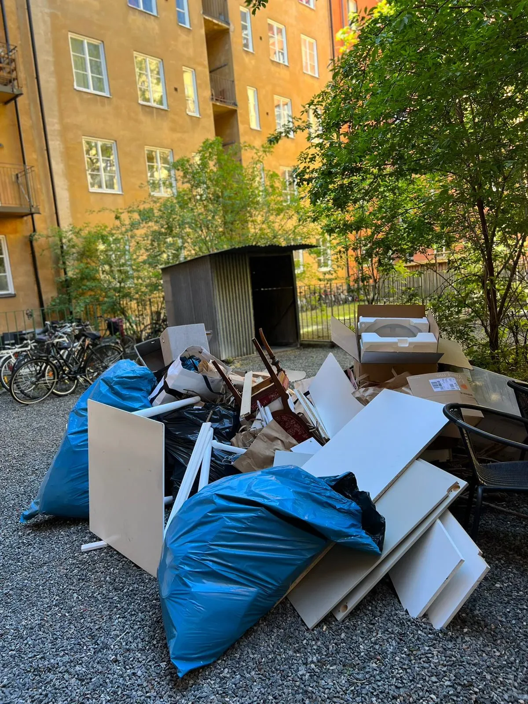
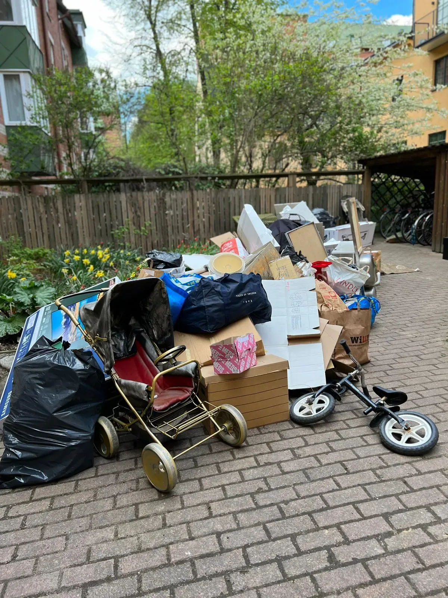
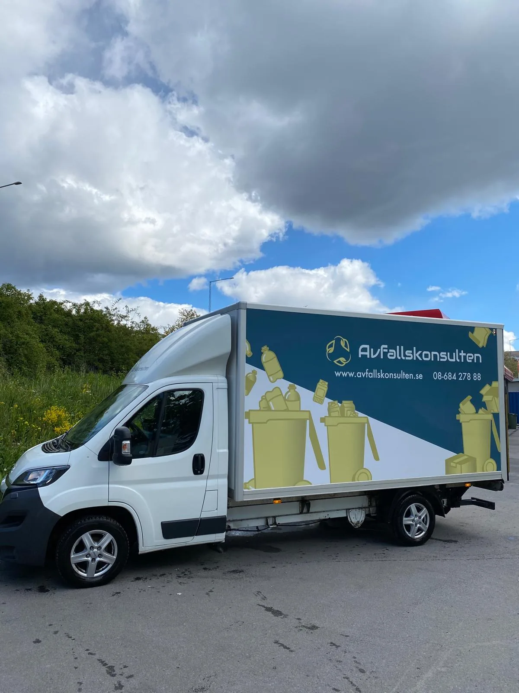

Hämta grovavfall och grovsopor i Stockholm
Har du grovavfall hemma, på kontoret eller ska du rensa ett gammalt förråd? Vi hämtar dina grovsopor och ser till att de sorteras rätt på miljöcertifierade återvinningscentraler.

-
4,9 av 5 på Reco231 omdömen från kunder
-
Auktoriserade i 9 kommunerStockholm, Solna, Sundbyberg och fler
-
Egen personalEgna chaufförer och egna bilar
-
Snabb hämtningOfta inom några dagar, kort framförhållning
Hämta grovsopor Stockholm
Vår tjänst för att hämta grovsopor i Stockholm är en bekväm lösning för större avfall som inte ryms i de vanliga sopkärlen. Vi samlar in och återvinner allt från uttjänta möbler och elektronik till byggavfall och annat skrymmande skräp. Vi kan även hämta byggsäckar.
Oavsett om du renoverar hemma, rensar ett förråd eller uppdaterar kontoret gör vi det enkelt att bli av med grovsopor utan krångel. Vårt team är vant vid alla typer av grovavfall och ser till att varje föremål tas om hand på ett sätt som respekterar både miljön och gällande regler.
Boka upphämtning av grovsopor
Grovsopor och grovavfall för bostadsrättsföreningar
Många bostadsrättsföreningar i Stockholm har ett särskilt utrymme för grovavfall, men det blir snabbt överfullt om det inte töms regelbundet. Vi erbjuder flexibla abonnemang för hämtning av grovavfall, anpassade efter föreningens behov och schema.
Våra medarbetare tömmer grovsoprummet effektivt, så att både boendemiljö och trivsel blir bättre. Vid behov inreder vi även grovsoprummet med sopkärl, skyltar och tydliga sorteringsanvisningar, vilket gör det enklare för medlemmarna att sortera rätt. Läs mer om återvinning för fastighet och brf.

Hämta grovavfall från vind och källare
Behöver du hjälp att rensa vinden eller hämta grovavfall från källaren? Vi gör vindsrensningar, gårdsröjningar och källarhämtningar, alltid anpassade efter dina behov. Med lång erfarenhet av tunga lyft och trapphämtningar kan du känna dig trygg med att arbetet utförs säkert.
Vi tar hand om allt från möbler och vitvaror till byggavfall och andra större föremål som inte får slängas i vanliga sopkärl. Vid behov kommer vi gärna ut och gör en kostnadsfri platsbesiktning för att planera hämtningen på bästa sätt.

Hämta grovsopor vid städdag
Ett populärt sätt för bostadsrättsföreningar att bli av med grovavfall är att låta medlemmarna ställa fram sitt avfall på en anvisad plats i samband med städdagen. Vi hämtar sedan allt, vilket sparar både tid och arbete för styrelsen.
Många brf-kunder bokar tjänsten varje vår och höst för att hålla gemensamma utrymmen och gårdar rena. Vid behov samlar vi även in elektronik, vitvaror och farligt avfall, och för större mängder kan ni hyra en container.
Boka hämtning till städdagen
Vad kostar hämtning av grovavfall?
Från 275 kr per hämtning
Den slutliga kostnaden beror framför allt på hur stor mängd grovavfall som ska hämtas och om hämtningen sker enligt ett schema eller beställs vid behov.
Vad påverkar priset?
Kostnaden påverkas främst av mängden grovavfall och hur hämtningen planeras. Större mängder eller uppdrag som kräver mer hantering kan påverka priset, medan återkommande och planerade hämtningar ger en enklare hantering och ett lägre pris per gång.
Abonnemang eller hämtning vid behov
För mindre mängder eller återkommande behov är en planerad lösning oftast smidigast. Uppstår behovet bara ibland passar hämtning på avrop bättre. Berätta hur mycket du behöver få hämtat och hur ofta, så hjälper vi dig att hitta rätt upplägg.

Vi hämtar grovsopor i hela Stockholm
Avfallskonsulten hjälper företag, fastighetsägare, bostadsrättsföreningar och privatpersoner med hämtning av grovavfall i hela Stockholmsområdet. Vi är auktoriserade i dessa kommuner:
Vanliga frågor om hämtning av grovsopor
Vad räknas som grovavfall?
Grovavfall är större föremål som inte ryms i vanliga sopkärl, till exempel möbler, vitvaror, större elektronik och byggavfall.
Hur beställer jag hämtning av grovsopor?
Enklast via bokningsformuläret här på sidan eller genom att ringa oss på 08-684 278 88.
Vad kostar det att hämta grovavfall?
Priset börjar från cirka 275 kr per hämtning och beror på mängden avfall och vilken typ av material som ska hämtas. Kontakta oss för en exakt offert.
Hur ofta kan jag beställa hämtning av grovavfall?
Så ofta du behöver, antingen regelbundet eller som enstaka hämtningar. Vi erbjuder flexibla scheman, till exempel veckovis, månadsvis eller vid behov.
Vad händer med grovavfallet efter hämtning?
Det transporteras till återvinnings- och behandlingsanläggningar där det sorteras och bearbetas för att maximera återvinningen och minimera miljöpåverkan.
Behöver jag sortera mitt grovavfall innan hämtning?
Ja, vi rekommenderar att du sorterar grovavfallet i kategorier som metall, trä, elektronik och farligt avfall. Det gör att vi kan hantera och återvinna avfallet effektivare.
Kan ni hämta grovavfall från en bostadsrättsförening?
Ja, vi hämtar grovavfall från många bostadsrättsföreningar, både som abonnemang och vid städdagar. Läs mer om återvinning för brf.
I vilka områden hämtar ni grovsopor?
Vi hämtar grovsopor i hela Stockholm och är auktoriserade i bland annat Sundbyberg, Järfälla, Täby, Lidingö, Sollentuna och Norrtälje.
Erbjuder ni abonnemang för hämtning av grovavfall?
Ja, vi erbjuder flexibla abonnemang där du väljer intervall som passar, till exempel veckovis, månadsvis eller kvartalsvis.
Kan ni hämta grovavfall vid kontorsflytt eller större utrensningar?
Absolut. Vi hanterar grovavfall vid kontorsflyttar, renoveringar och större utrensningar, så att du slipper logistiken.
Vilka möbler och vitvaror räknas som grovavfall?
Bland annat soffor, sängar och bokhyllor samt vitvaror som kylskåp, frysar och tvättmaskiner. Vi tar hand om allt detta på ett miljövänligt sätt.
Hur snabbt kan ni hämta vid akuta behov?
Vi erbjuder snabb och flexibel hämtning även vid akuta situationer. Kontakta oss så bokar vi en tid som passar.
Vilka är miljöfördelarna med professionell hämtning av grovavfall?
Korrekt sortering ger ökad återvinning och mindre avfall på deponi. Farliga material tas om hand säkert, vilket minskar risken för miljöföroreningar.
Berätta vad du vill ha hämtat, så återkommer vi med pris
Fyll i formuläret så hör vi av oss inom en arbetsdag, oftast samma dag. Vi lämnar alltid ett tydligt pris innan vi kommer ut.
Vill du hellre ringa?08-684 278 88